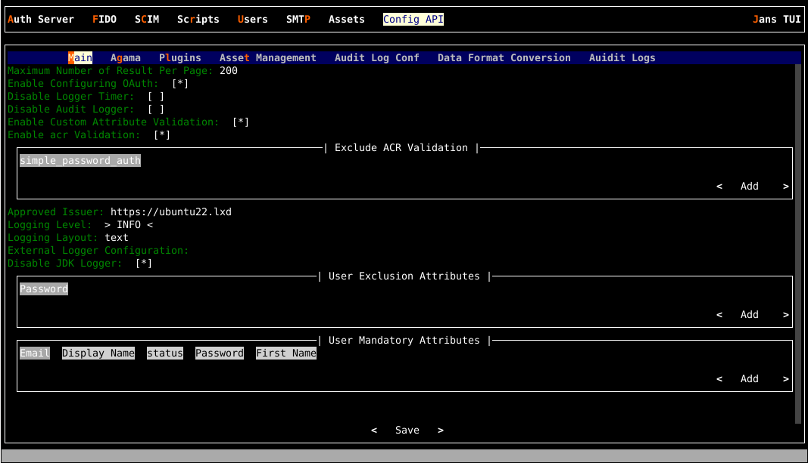

Janssen Config-API Configuration#
The Janssen Server provides multiple configuration tools to perform these tasks.
Use the command line to perform actions from the terminal. Learn how to use Jans CLI here or jump straight to the Using Command Line
Use a fully functional text-based user interface from the terminal. Learn how to use Jans Text-based UI (TUI) here or jump straight to the Using Text-based UI
Use REST API for programmatic access or invoke via tools like CURL or Postman. Learn how to use Janssen Server Config API here or Jump straight to the Using Configuration REST API
Using Command Line#
In the Janssen Server, you can deploy and customize the Config-API Configuration
using the command line. To get the details of Janssen command line operations
relevant to Config-API Configuration, you can check the operations under
ConfigurationConfigApi task using the command below:
jans tui --info ConfigurationConfigApi
It will show the details of the available operation-ids for Config-API.
Operation ID: get-config-api-properties
Description: Gets config-api configuration properties.
Operation ID: patch-config-api-properties
Description: Partially modifies config-api Configuration properties.
Schema: Array of JsonPatch
To get sample schema type jans tui --schema-sample <schema>, for example jans tui --schema-sample JsonPatch
Get The Current Config-API Configuration#
Configuration for Config-API is a set of key-value pairs, called properties. When we retrieve the configuration, these properties and their current values are returned as a JSON document. To get the properties of Janssen Config-API Configuration, run the command below:
jans tui --operation-id=get-config-api-properties
It will return the result as below:
| Sample Output | |
|---|---|
1 2 3 4 5 6 7 8 9 10 11 12 13 14 15 16 17 18 19 20 21 22 23 24 25 26 27 28 29 30 31 32 33 34 35 36 37 38 39 40 41 42 43 44 45 46 47 48 49 50 51 52 53 54 55 56 57 58 59 60 61 62 63 64 65 66 67 68 69 70 71 72 73 74 75 76 77 78 79 80 81 82 83 84 85 86 87 88 89 90 91 92 93 94 95 96 97 98 99 100 101 102 103 104 105 106 107 108 109 110 111 112 113 114 115 116 117 118 119 120 121 122 123 124 125 126 127 128 129 130 131 132 133 134 135 136 137 138 139 140 141 142 143 144 145 146 147 148 149 150 151 152 153 154 155 156 157 158 159 160 161 162 163 164 165 166 167 | |
Update Config-API Configuration Properties#
To update the configuration, we will use JSON patch schema as shown below.
Let's say we want to stop the file extension validation done
by config-api's asset management module. This can be done by
setting the fileExtensionValidationEnabled property to
false. To do that, write a text file (config-api-assetmgt-patch.json) with the content that follows the JSON patch schema.
| config-api-assetmgt-patch.json | |
|---|---|
1 2 3 4 5 6 7 | |
Now, execute the following command to apply this patch:
jans tui \
--operation-id=patch-config-api-properties --data ./config-api-assetmgt-patch.json
Updating multi-valued property#
Let's say we want to update the configuration property userMandatoryAttributes. This property's value is a list of attributes. We want to remove an attribute from the list. For this, we will have to create a JSON patch file that contains the new list and then run a command to push the update to the Janssen Server. Let's do this step-by-step:
- Get the current value list for userMandatoryAttributes property using steps mentioned in Get the current configuration section
- Using the current list of values as a starting point, create a JSON patch file
config-api-patch.jsonas below. Update the list as desired by adding or removing items from the list:
| Sample Contents | |
|---|---|
1 2 3 4 5 6 7 8 9 10 11 12 13 14 | |
Now, execute the following command to apply this patch:
jans tui \
--operation-id=patch-config-api-properties --data ./config-api-patch.json
Config API Configuration Parameters:#
The table below outlines the key configuration parameters for the Jans Config API. It details settings for OAuth2, security, endpoints, logging, and plugin management.
| Field named | Example | Description |
|---|---|---|
| configOauthEnabled | true | property can be used to enable or disable the oAuth2 authorization. By default, it is set to true. |
| apiApprovedIssuer | ["https:// |
Enables to set more than one authorization servers. By default, the current auth-server is set. You can add more servers separated by commas. |
| apiProtectionType | oauth2 | Currently support mechanism is OAuth 2.0 tokens. |
| apiClientId | 1800.52eb1bed-ab5c-4ba6-b87e-90aad26058d0 | Jans Config API Client. |
| apiClientPassword | lwI/8mcMkF63mvueYTZ0mQ== | Encrypted secret of Jans Config API Client |
| endpointInjectionEnabled | false | To be used if the endpoint needs to be injected. |
| authIssuerUrl | https://my-jans-server.jans.io | URL of underlying auth-server. |
| authOpenidConfigurationUrl | https://my-jans-server.jans.io/.well-known/openid-configuration | Metadata URL of the authorization server. |
| authOpenidIntrospectionUrl | https://my-jans-server.jans.io/jans-auth/restv1/introspection | Authorization server endpoint to check the state of an OAuth 2.0 token and to determine meta-information about the token. |
| authOpenidTokenUrl | https://my-jans-server.jans.io/jans-auth/restv1/token | Authorization server endpoint to obtain an Access Token, an ID Token, and optionally a Refresh Token. |
| authOpenidRevokeUrl | https://my-jans-server.jans.io/jans-auth/restv1/token | Authorization server endpoint to notify an OAuth 2.0 authorization server that a previously obtained refresh or access token is no longer needed, allowing the server to clean up security credentials. |
| smallryeHealthRootPath | /health-check | Deprecated param for health-check |
| exclusiveAuthScopes | ["jans_stat","https://jans.io/scim/users.read","https://jans.io/scim/users.write"] | Scopes that are only validated against the underlying Janssen Authorization server. |
| corsConfigurationFilters | [{"filterName":"CorsFilter","corsEnabled":true,"corsAllowedOrigins":"*","corsAllowedMethods":"GET,PUT,POST,DELETE,PATCH,HEAD,OPTIONS","corsAllowedHeaders":"","corsExposedHeaders":"","corsSupportCredentials":true,"corsLoggingEnabled":false,"corsPreflightMaxAge":1800,"corsRequestDecorate":true}] | This list specifies the CORS configuration filters. |
| exclusiveAuthScopes | ["jans_stat","https://jans.io/scim/users.read","https://jans.io/scim/users.write"] | Scopes that are only validated against the underlying Janssen Authorization server. |
| loggingLevel | "INFO" or "TRACE" or "DEBUG" | Logging level for Config API. |
| loggingLayout | "text" | Contents of logs as plain text format. |
| externalLoggerConfiguration | Path to external log4j2 logging configuration. | |
| disableJdkLogger | true | Boolean to disable JDK loggers. |
| maxCount | 200 | To be used to set maximum records returned in response. |
| userExclusionAttributes | ["userPassword"] | List of attributes to be excluded in User response. |
| userMandatoryAttributes | ["mail","displayName","jansStatus","userPassword","givenName"] | List of attributes mandatory for creating a User. |
| agamaConfiguration | {"mandatoryAttributes":["qname","source"],"optionalAttributes":["serialVersionUID","enabled"]} | Configuration parameters like mandatory, optional, etc for agama flow. |
| auditLogConf | {"enabled":true,"ignoreHttpMethod":[],"headerAttributes":["User-inum"]} | Audit Log configuration. |
| dataFormatConversionConf | {"enabled":true,"ignoreHttpMethod":["@jakarta.ws.rs.GET()"]} | DB specific data format conversion configuration for Date field. |
| plugins | [{"name":"admin","description":"admin-ui plugin","className":"io.jans.ca.plugin.adminui.rest.ApiApplication"},{"name":"fido2","description":"fido2 plugin","className":"io.jans.configapi.plugin.fido2.rest.ApiApplication"},{"name":"scim","description":"scim plugin","className":"io.jans.configapi.plugin.scim.rest.ApiApplication"},{"name":"user-management","description":"user-management plugin","className":"io.jans.configapi.plugin.mgt.rest.ApiApplication"}] | List of configured plugin. |
Two options to make effect any manual changes done to the configuration#
- Restart jans-config-api
- Increment the
jansRevisionproperty of the configuration without restarting the application. The timer job will detect the change and fetch the latest configuration from the DB.
Locating Config API configuration in the Persistence Layer#
While it is not recommended that an administrator directly edits a configuration at the persistence layer, it may be useful information for a developer.
MySQL#
erDiagram
jansAppConf {
string doc_id PK ""
string ou "jans-config-api"
string jansConfDyn "json configuration for the app"
}Important attributes#
OAuth authorization#
configOauthEnabled property can be used to enable or disable the oAuth2
authorization. By default, it is set to true.
"configOauthEnabled": true
Api protection#
apiProtectionType property states the protocol used for API authorization.
The currently supported value is oauth2.
"apiProtectionType": "oauth2"
Api protection auth server#
apiApprovedIssuer property enables to set more than one authorization servers.
By default, the current auth-server is set. You can add more servers separated
by commas.
apiApprovedIssuer": ["https://<jans.auth.server>,https://<gluu.server>,https://<anyAuth.server>"]
Logging level#
loggingLevel property can be used to change the logging level to the
desired values (TRACE, DEBUG, INFO, WARN, ERROR). By default, the level is
set to INFO
```javascript
"loggingLevel":"DEBUG",
```
Scopes other than the one defined by config-api#
Config API endpoints are oAuth2 protected. These scopes are created during installation. However, few endpoints require scopes defined by other modules like auth-server.
A list of these scopes is maintained in the configuration in order to avoid
the creation of these scopes during Config API start-up. exclusiveAuthScopes
property can be used to change the logging level to the desired value
(TRACE, DEBUG, INFO, WARN, ERROR). By default, the level is set to INFO
"exclusiveAuthScopes": [
"jans_stat",
"https://jans.io/scim/users.read",
"https://jans.io/scim/users.write"
],
User - Mandatory and exclusion attributes#
MandatoryAttributes#
userMandatoryAttributes can be used to define mandatory attributes
for User while creating and updating.
"userMandatoryAttributes": [
"mail",
"displayName",
"jansStatus",
"userPassword",
"givenName"
],
Exclusion attributes#
userExclusionAttributes can be used to define User attributes that are not
to be returned in the API response. More attributes that are to be skipped in
response can be added to the list.
"userExclusionAttributes": [
"userPassword"
],
Agama flow configuration#
agamaConfiguration stores Agama-related configuration used in Agama related
endpoints.
mandatoryAttributes list defines the required attributes for Agama flow creation
and update.
optionalAttributes list specifies the optional attributes.
"agamaConfiguration": {
"mandatoryAttributes": [
"qname",
"source"
],
"optionalAttributes": [
"serialVersionUID",
"enabled"
]
}
Using Text-based UI#
You can start TUI using the command below:
jans tui
Navigate to Config API section where administrators can update
Config-API configurations in six sub-tabs, namely
Main, Agama, Plugins, Asset Management, Audit Log Conf,
Data Format Conversion

Using Configuration REST API#
Janssen Server Configuration REST API exposes relevant endpoints for
managing and configuring the Config-API Configuration. Endpoint details
are published in the Swagger document,
see endpoint /api/v1/api-config
Created: 2022-07-21